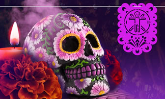

¿Qué es?
El Día de Muertos es una celebración tradicional mexicana que inspiró a otras zonas de Latinoamérica a honrar a los muertos.Tiene lugar los días 1 y 2 de noviembre y está vinculada a las celebraciones católicas de Día de los Fieles Difuntos y Todos los Santos.Es una festividad que se celebra principalmente en México donde es originaria y en países latinoamericanos como Bolivia, Perú, Ecuador, Guatemala y en menor grado en países de América Central y en la región andina en América del Sur, desde el noroeste de Argentina hasta los Estados Unidos, en zonas donde existe una gran población indígena.En el 2008 la Unesco declaró la festividad como Patrimonio Cultural Inmaterial de la Humanidad de México.
Actualmente también se festeja en zonas más al sur, como por ejemplo en Buenos Aires, por migrantes del área andina central, principalmente del occidente de Bolivia, del Noroeste Argentino (NOA), el sureste de Perú, y en Venezuela es celebrado por el pueblo kariña que se le denomina "Akaatompo" o fieles difuntos, también se celebra la llora, todo se trata de celebrar a sus muertos, cabe destacar que el día de los muertos en Venezuela proviene de los nativos y es una costumbre muy antigua que ha cambiado a la llegada de los españoles.
Origen del Día de muertos
Diferencias de Halloween y Día de muertos
| Proviene de la expresión inglesa “All Hallows Eve” (víspera de todos los santos) |
| Se celebra el 31 de octubre desde que llegó en 1840 a Estados Unidos. |
| Su origen se remonta a la celebración celta de Samhain en Irlanda. Los celtas creían que la línea que separa al mundo terrenal del “otro mundo” se hacía más estrecha en esta temporada, permitiendo que los espíritus atravesaran al mundo de los vivos. |
| Los niños salen a las calles a pedir dulces diciendo “Trick or Treat” (dulce o truco) con disfraces, esto en representación de los entes malignos que regresan a atemorizarnos, y que para apaciguarlos se les ofrecen golosinas (en la antigüedad, se ofrecía comida) |
| La tradición, en Estados Unidos, es decorar calabazas conocidas como Jack O’Lantern, también de origen irlandés, siendo también la calabaza (por la fecha de su cosecha) alimento común en esta época. |
| A diferencia de Halloween, en estos dos días no se pide, se ofrenda. Con altares se ofrece un tributo a los seres que fallecieron y en ambos días visitan el mundo de los vivos. |
| Esta festividad se celebra durante dos días: el primero de noviembre dedicado para los niños difuntos, y el segundo día para los mayores. |
| Tiene orígenes prehispánicos que se acentuaron con la llegada de los españoles en México. En su intento de convertir a los habitantes nativos hacia el catolicismo, trasladaron el festejo a inicios de noviembre para que coincidiera con las festividades del Día de todos los santos y todas las almas. |
| Si bien uno de los colores de esta época es el amarillo, debido a el Cempasúchitl, la flor representativa. Esta flor, por su olor y aroma, pretende atraer y guiar a los muertos hasta su hogar. |
| En contraste con el Halloween, no se usan máscaras, trajes o disfraces para ahuyentar, sino para representar a la misma muerte. Por eso es tan emblemática la figura de la ‘Catrina’ |
Canciones basadas en día de muertos
Datos curiosos
Se dice que sólo en el Día de Muertos, los difuntos son autorizados desde el más allá para visitar a sus parientes vivos en la Tierra, y ellos los reciben con una fiesta y ofrenda que tiene como finalidad agasajarlos con las más grandes atenciones y cosas que disfrutaban en vida.
Los tres niveles con los que cuenta el altar del día muertos simbolizan a las tres divinas personas: padre, hijo y espíritu santo. Por su parte, la cruz que casi siempre se dibuja en el suelo con tierra les recuerda su fe, relacionada con el miércoles de ceniza en el que les dice a los fieles “polvo eres y en polvo te convertirás”.
Las flores de Cempasúchil que tienen colores muy vivos como el amarillo y naranja, se colocan en los altares de muerto y en el suelo dibujando un camino, pues pretenden simbolizar la luz del sol que alumbre el camino de los difuntos hacia la Tierra.